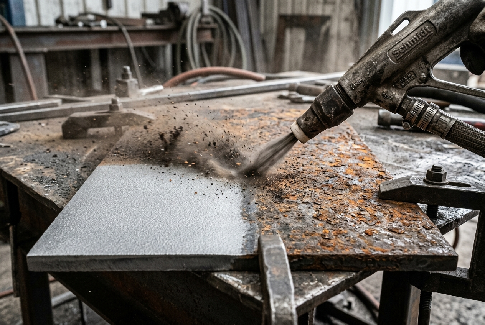

Garantía de adherencia y perfil de rugosidad en estructuras de acero, cañerías y tanques.
Realizamos preparación de superficies metálicas mediante arenado abrasivo, barrido y tratamientos localizados, adaptando el proceso a los requerimientos técnicos del activo, del sistema de pintura y de las condiciones de obra. Aseguramos el perfil de rugosidad adecuado para una óptima adherencia de los esquemas anticorrosivos más exigentes de la industria.

Limpieza abrasiva seca al metal casi blanco (SA 2½) o blanco absoluto (SA 3) para la máxima durabilidad en interiores de tanques y vasijas de proceso.
Tratamiento neumático rápido para remover recubrimientos sueltos y crear aspereza superficial sin degradar la chapa sana subyacente.
Arenado puntualizado sobre zonas localizadas de corrosión activa o cordones de soldadura antes de reparaciones mecánicas en yacimientos.
Métodos alternativos complementarios (herramientas neumáticas/manuales) para zonas inaccesibles para el chorro abrasivo.
Inspección inicial de la chapa, remoción de sales, grasas y aceites solubles mediante solventes o hidrolavado previo.
Arenado neumático controlado a alta presión utilizando mangueras industriales, boquillas venturi y abrasivos seleccionados.
Verificación técnica del grado de limpieza visual y medición micrométrica del perfil de anclaje resultante mediante cinta Testex.
Aplicación de la primera capa de pintura anticorrosiva de forma inmediata para evitar la oxidación flash (dentro de la ventana de humedad).